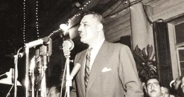

جمال عبد الناصر
رحلة قائد غيرت وجه أمة
"كنت أنظر إلى ما وراء حدودنا، وأجد نفس الدوائر تحيط بنا.. فهل يمكن أن نتجاهل وجود دائرة عربية تحيط بنا؟ وهل يمكن أن نتجاهل وجود دائرة إفريقية جعلتنا القارة جزءًا منها؟"
- من كتاب فلسفة الثورة
الفصل الأول: من الطفولة إلى الثورة: نشأة قائد
1.1 المولد والنشأة العائلية
ولد جمال عبد الناصر في 15 يناير 1918 بحي باكوس بالإسكندرية، لأسرة تعود أصولها إلى صعيد مصر. كانت طفولته متنقلة بسبب عمل والده في البريد، مما أتاح له التعرف على مختلف شرائح المجتمع المصري. كانت وفاة والدته وهو في الثامنة من عمره حدثًا فارقًا، حيث وصف تلك التجربة بأنها "صدمة تركت في شعورًا لا يمحوه الزمن".
1.2 بداية الوعي السياسي والتعليم العسكري
بدأ وعيه السياسي مبكرًا، فشارك في مظاهرات طلابية ضد الاستعمار البريطاني وهو في المرحلة الثانوية. أدى هذا النشاط إلى إصابته واعتقاله لفترة وجيزة، كما ذُكر اسمه في جريدة "الجهاد" كأحد الجرحى، مما أشعل حماسه الوطني. قرأ بنهم في سير الزعماء القوميين مثل نابليون وأتاتورك، وتأثر بشدة بكتابات توفيق الحكيم ومصطفى كامل.
1.3 التأثيرات المبكرة والتوجه العسكري
بعد محاولة أولى فاشلة، التحق بالكلية الحربية عام 1937، حيث التقى بعبد الحكيم عامر (صورة عبد الحكيم عامر غير متوفرة بشكل مباشر) وأنور السادات (صورة أنور السادات غير متوفرة بشكل مباشر). رأى في الجيش الأداة الوحيدة القادرة على تحرير البلاد. كان حادث 4 فبراير 1942، حين حاصرت الدبابات البريطانية قصر الملك فاروق (صورة الملك فاروق غير متوفرة بشكل مباشر)، نقطة تحول عززت قناعته بضرورة الثورة لإنهاء الهيمنة الأجنبية والفساد الداخلي.
1.4 حرب فلسطين وتشكيل الضباط الأحرار
كانت مشاركته في حرب فلسطين 1948 تجربة مريرة كشفت له عن حجم الفساد وعدم كفاءة القيادة. الحصار في الفالوجة، الذي خرج منه بطلاً، عمّق من غضبه وعزز من فكرة ضرورة التغيير الجذري. بعد الحرب، بدأ بتأسيس تنظيم "الضباط الأحرار" السري، الذي جمع ضباطًا وطنيين من مختلف الخلفيات بهدف الإطاحة بالملكية وإقامة حكم وطني مستقل.
الطريق إلى السلطة: ثورة يوليو والصراع على القيادة
لم تكن ثورة 23 يوليو مجرد انقلاب عسكري، بل كانت بداية لتحول جذري في تاريخ مصر الحديث. قاد ناصر والضباط الأحرار هذه الحركة، لكن الطريق إلى ترسيخ سلطته كان مليئاً بالتحديات الداخلية والصراعات على الرؤية والمستقبل.
ثورة 23 يوليو 1952
قاد الضباط الأحرار، بقيادة اسمية من اللواء محمد نجيب (صورة محمد نجيب غير متوفرة بشكل مباشر) وتخطيط فعلي من عبد الناصر، حركة ناجحة أطاحت بالملك فاروق. تم نفي الملك وتشكيل مجلس قيادة الثورة لإدارة البلاد.
إصلاحات ومواجهات مبكرة
أصدر مجلس قيادة الثورة قانون الإصلاح الزراعي الذي حد من الملكية الكبيرة للأراضي ووزعها على الفلاحين، مما أكسب الثورة دعمًا شعبيًا واسعًا. وفي 18 يونيو 1953، تم إلغاء الملكية وإعلان الجمهورية، وتعيين محمد نجيب أول رئيس لها.
الخلاف مع محمد نجيب
ظهرت خلافات جوهرية بين نجيب، الذي كان يميل إلى عودة الحياة البرلمانية، وناصر ومجلس قيادة الثورة الذين أرادوا استمرار السيطرة العسكرية. أدت الأزمة إلى استقالة نجيب ثم عودته تحت ضغط شعبي وعسكري، لكن ناصر كان قد بدأ في تعزيز سيطرته الفعلية على مفاصل الدولة.
محاولة اغتيال المنشية
أثناء إلقاء خطاب في الإسكندرية، تعرض ناصر لمحاولة اغتيال نُسبت إلى جماعة الإخوان المسلمين. ثباته الأسطوري وخطابه العاطفي بعد الحادث ("فليبق كل في مكانه أيها الرجال..") حوله إلى بطل شعبي، ومنحه المبرر لشن حملة واسعة ضد الإخوان وإزاحة نجيب نهائيًا عن السلطة ليصبح الزعيم الأوحد لمصر.
الفصل الثاني: زعيم الأمة
من تأميم القناة إلى قيادة العالم الثالث، شكلت سياسات ناصر الداخلية والخارجية حقبة فريدة في تاريخ مصر والعالم العربي. استكشف أبرز إنجازاته وتحدياته خلال فترة حكمه.
تأميم قناة السويس (1956)
في 26 يوليو 1956، وبعد سحب الولايات المتحدة وبريطانيا تمويلهما لبناء السد العالي، أعلن جمال عبد الناصر من الإسكندرية قرار تأميم شركة قناة السويس. كان هذا القرار بمثابة تحدٍ مباشر للقوى الاستعمارية القديمة، وأدى إلى العدوان الثلاثي على مصر من قبل بريطانيا وفرنسا وإسرائيل. على الرغم من الهزيمة العسكرية، خرج ناصر من الأزمة منتصرًا سياسيًا، حيث عزز مكانته كزعيم عربي مناهض للإمبريالية وأصبحت مصر صاحبة السيادة الكاملة على القناة.
أثر السياسات الناصرية
ركز ناصر على التنمية الصناعية والعدالة الاجتماعية. يوضح المخطط التالي الأهمية النسبية لأبرز مشاريعه وسياساته التي هدفت إلى بناء دولة حديثة ومستقلة.


مشروع الوحدة العربية
أصبح ناصر رمزًا للقومية العربية، وبلغ حلمه ذروته بتأسيس الجمهورية العربية المتحدة مع سوريا عام 1958. كانت تجربة الوحدة قصيرة وانتهت بانفصال سوريا عام 1961، مما شكل صدمة كبيرة له. على الرغم من ذلك، استمر تأثيره في العالم العربي، حيث دعم حركات التحرر في الجزائر واليمن، ولعب دورًا محوريًا في تأسيس منظمة التحرير الفلسطينية وحركة عدم الانحياز، التي جعلت من مصر لاعبًا رئيسيًا على الساحة الدولية.
- الجمهورية العربية المتحدة (1958-1961): وحدة مع سوريا كانت تتويجًا لحلم القومية العربية.
- حرب اليمن (1962-1967): تدخل لدعم الثورة الجمهورية، لكنه استنزف موارد مصر العسكرية والاقتصادية.
- حركة عدم الانحياز: شارك في تأسيسها مع تيتو (صورة تيتو غير متوفرة بشكل مباشر) ونهرو (صورة نهرو غير متوفرة بشكل مباشر) وسوكارنو (صورة سوكارنو غير متوفرة بشكل مباشر)، لتمثيل صوت الدول النامية في خضم الحرب الباردة.
صراعات وحروب: اختبارات القيادة
واجهت مصر في عهد ناصر تحديات عسكرية كبرى، بدءًا من العدوان الثلاثي وانتهاءً بحرب 1967 وحرب الاستنزاف. كانت هذه الصراعات اختبارات قاسية لقيادته وشكلت ملامح المنطقة لعقود.
أزمة السويس (العدوان الثلاثي) - 1956
ردًا على تأميم القناة، شنت بريطانيا وفرنسا وإسرائيل هجومًا منسقًا على مصر. انتهى الغزو بفشل سياسي ذريع للدول المعتدية تحت ضغط دولي من الولايات المتحدة والاتحاد السوفيتي، مما رسخ زعامة ناصر عربيًا ودوليًا.
الولاية الرئاسية الثانية
أعيد انتخاب ناصر لولاية ثانية كرئيس للجمهورية العربية المتحدة بعد استفتاء شعبي، وكان المرشح الوحيد للمنصب. في نفس العام، تم حبس سيد قطب (صورة سيد قطب غير متوفرة بشكل مباشر)، الزعيم الفكري لجماعة الإخوان المسلمين، وأعدم عام 1966 بتهمة التخطيط لاغتيال ناصر.
حرب 1967 (النكسة)
في 5 يونيو 1967، شنت إسرائيل هجومًا استباقيًا دمر معظم سلاح الجو المصري على الأرض. في غضون ستة أيام، احتلت إسرائيل سيناء وقطاع غزة والضفة الغربية وهضبة الجولان. كانت الهزيمة كارثية، وقدم ناصر استقالته الشهيرة قبل أن يعود بضغط شعبي جارف.
حرب الاستنزاف (1968-1970)
ناصر يراقب الجبهة مع ضباط السويس خلال حرب الاستنزاف عام 1968"
"ناصر يتوسط لوقف إطلاق النار بين ياسر عرفات (صورة ياسر عرفات غير متوفرة بشكل مباشر) والملك حسين (صورة الملك حسين غير متوفرة بشكل مباشر) عام 1970
بعد النكسة، أطلق ناصر حرب الاستنزاف على طول قناة السويس بهدف استنزاف قوة إسرائيل وإجبارها على الانسحاب. تضمنت الحرب غارات مدفعية وجوية وعمليات خاصة من الجانبين، وانتهت بقبول مبادرة روجرز لوقف إطلاق النار قبل وفاة ناصر بفترة وجيزة.
الإرث والذكرى: الزعيم الخالد
زعيم الكرامة العربية
توفي جمال عبد الناصر في 28 سبتمبر 1970 إثر نوبة قلبية، تاركًا وراءه إرثًا معقدًا ومثيرًا للجدل. بالنسبة للملايين، يظل ناصر رمزًا للكرامة الوطنية، والاستقلال، والعدالة الاجتماعية. لقد أعاد لمصر والعرب شعورهم بالفخر، وحقق إنجازات اجتماعية واقتصادية كبرى مثل مجانية التعليم والتأمين الصحي.
وجهات نظر نقدية
في المقابل، ينتقده آخرون بسبب حكمه السلطوي، وغياب الديمقراطية، وقمع الحريات السياسية، والهزيمة العسكرية في 1967. يظل إرثه محل نقاش حاد، لكن تأثيره على مسار التاريخ الحديث في الشرق الأوسط لا يمكن إنكاره.
جنازة تاريخية
جنازة عبد الناصر في القاهرة، 1 أكتوبر 1970، والتي حضرها الملايين في وداع تاريخي.
مسجد عبد الناصر في القاهرة، مكان دفنه .